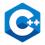

 C++
Get started with this popular language, whether you’re new to programming or just new to C++.
Get a comprehensive, in-depth introduction to C++, or sharpen your skills from intermediate to advanced.
What you'll learn
semantics of the cpp
what is compiler / IDE
variables / types of variables
input / output streams and validation of data
operators - arithmetic, assigment, logical, bitwise
conditions like if / else / switch
arrays / multi-dimensional arrays
loops - for / while / do-while
functions, overloading functions, passing variables to functions etc.
structures
referencers
pointers
dynamic allocation of memory
creating project in IDE
classes
object oriented programming
class and function templates
namespaces
exceptions
fstream library (i/o operation on files)
more
. Java.
By the end of this Java online training course, you will be able to accomplish the following:
Understand basic Core Java 8 concepts
Implement multi-threading, string handling and exception handling techniques
Set up connections using JDBC to communicate with a database
Understand servlet fundamentals such as J2EE, HTTP Protocol and HTML in detail
Create a JSP by following directives, and run an application
Learn Hibernate Query Language (HQL) and its exciting features
Map relationships with Hibernate
Learn how to configure AOP in a Java application
Dive deeply into SOA architecture
Design a SOAP-based web service
more
. Python.
In this Python training course, students learn to program in Python. The course is aimed at students new to the language and who may, or may not, have experience with other programming languages.
Students will learn:
- how Python works and its place in the world of programming languages
- to work with and manipulate strings
- to perform math operations
- to work with Python sequences
- to collect user input and output results
- flow control processing
- to write to, and read from, files
- to write functions
- to handle exception
- and work with dates and times
more
 Big Data
Big Data
Some text inside the box.
Some text inside the box.
Some text inside the box.
Some text inside the box.
Some text inside the box.
. Qt
Discover how we help design, develop and deliver world-class desktop, embedded and mobile applications using Qt.
The program is designed to help your engineers:
Create better code
Gain a deeper understanding of Qt and QML
Provide real-world insight into potential process improvements for your team
Reduce the amount of time it takes your team to become proficient
Improve the quality of work
Create better touchscreen UIs for your customers
more
. Database
This database tutorial is aimed at beginners. Perhaps you're starting to outgrow your spreadsheets? Or maybe you think you need a database but you're not sure? If this sounds like you, read on!
What is a Database?
Database Management Systems
Creating a Database
About Database Tables
Creating Database Tables
Adding Data to a Database
Querying a Database
Relational Database Design
NoSQL Databases
Database Driven Website
more